2026
Flux chamber methods for quantifying greenhouse gas emissions from composting piles: Applicability, challenges, and future perspectives Abera Jabessa Fufa, Jinho Shin, Riuh Wardhani, Seongjun Park, Heekwon Ahn, Journal of Animal Enviornmental Science, 43-54, 2026.04.30.2026
Two-Phase Dynamics of Ammonia Emissions from Stored Pig Slurry: Interactions Between Nitrogen Transformations and Organic N Mineralization Joonhee Lee, Heekwon Ahn, Agriculture, 16, 1149, 26.05.24.2026
A multi-chamber incubation system for accurate assessment of ammonia and hydrogen sulfide emissions from cattle manure: Effects of dietary protein lev… Kyungmo Kang, Hyunjin Cho, Mingyung Lee, Sinyong Jeong, Seoyoung Jeon, Kyewon Kang, Hamin Kang, Jinho Shin, Heekwon Ahn, Seongwon Seo, Animal Feed Science and Technology, 340, 116816, 26.04.30.2026
Evaluation of manure production and characteristics in a beef cattle bedded pack barn: Effects of season and growth stage Myeongseong Lee, Seunghun Lee, Eunjong Kim, Jisoo Wi, Heekwon Ahn, Journal of Environmental Quality, 55, e70191, 2026.04.20.2025
Compost Nutrient Balance Analysis Results and Water Quality Implications from a Demonstration Livestock Manure Windrow Composting Site D Webber, H Ahn, T Richard, S Mickelson, Compost Science & Utilization, 1-11, 27 Mar 2025.2025
Evaluating the Odor Mitigation Effects of Biochar-Enhanced Bedding Materials in a Simulated Bedded Pack Dairy Barn Environment: A Laboratory-Scale Stu… Jinho Shin, Daehun Kim, Yangjoon Lee, Seunghun Lee, Riuh Wardhani and Heekwon Ahn*, applied sciences, 1-23, 21 April 2025.2025
Seasonal and Diurnal Ammonia Emissions from Swine-Finishing Barn with Ground Channel Ventilation Jinho Shin, Heecheol Roh, Daehun Kim, Jisoo Wi, Seunghun Lee and Heekwon Ahn*, animals, 1-16, 7 May 2025.2025
Effectiveness of Floating Covers in Mitigating Ammonia and Hydrogen Sulfide Emissions from Lab-Scale Swine Slurry Pits Jumi Lee, Riuh Wardhani, Jinho Shin, Seunghun Lee, Yangjoon Lee, Heekwon Ahn, sustainability, Slurry Pits. Sustainability 2025, 17, 374., 1-15, 3 January 2025.2025
Mitigation of gaseous nitrogen losses during composting of beef cattle bedded manure using rice husk biochar Jinho Shin, Dongyeo Kim, Riuh Wardhani, Abera Jabessa Fufa, Yongwoo Song, Tegu Lee, Suhyun Kim, Jongok Lee, J. Anim. Environ. Sci., 1-12, 31 August 2025.2025
Evaluation of Aquamicrobium lusatiense NLF 2–7 as a Biocontrol Agent in Manure Composting: Effects on Odorous Compounds and Microbial Community Under … Riuh Wardhani, Jinho Shin, Seunghun Lee, Jumi Lee, Young Ho Nam, Mi-Hwa Lee, Kook-II Han, Heekwon Ahn, Microbial Ecology, 88, 2025/11/25.14
2026.07
[신문 기사] Seongjun Park, Master’s Student from LEL, Accepted by LEMI
Seongjun Park, a second-year master’s student at the Livestock Environment Laboratory (LEL), has been accepted by the Livestock Environment Management Institute (LEMI)…
16
2026.05
[신문 기사] 축산 탄소 책임론 바로잡아야
축산업계, 육류 소비와 온실가스 배출 비교 방식에 문제 제기 최근 육류 소비가 기후위기의 주요 원인으로 지목되는 가운데, 축산업계가 관련 온실가스 배출량 분석 방식에 대해 우려를…
16
2026.05
[신문 기사] 축산환경기계협, 필리핀 협력 논의
한국축산환경시설기계협회와 필리핀 따굼시 관계자들이 축산 협력 논의 후 기념촬영을 하고 있다.한국축산환경시설기계협회는 5월 4월 필리핀 민다나오 지역을 방문해 따굼시 및 다바오 델 …
19
2025.09
[공지사항] 축산환경 특성화대학원 2026년도 1차 전형 모집요강
축산환경 특성화대학원 2026년도 1차 전형 모집요강입니다! 많은 관심 부탁드립니다!
27
2024.11
[공지사항] 축산환경 특성화대학원 2025년 2차 전형 모집요강
국내에서 최초로 선정된 특성화대학원으로 축산환경 분야의 다양한 문제들을 친환경적으로 대응하고 해결할 수 있는 전문인재양성에 특화된 교육과정을 운영합니다. 1. 모집일정…
27
2024.11
[공지사항] 2025학년도 전기 대학원 2차 전형 신입생 모집 안내
1. 관련가. 입학과-9052(2024.11.12.)「2025학년도 전기 대학원 2차 전형 모집요강(안) 의견조회」나. 대학원-9438…